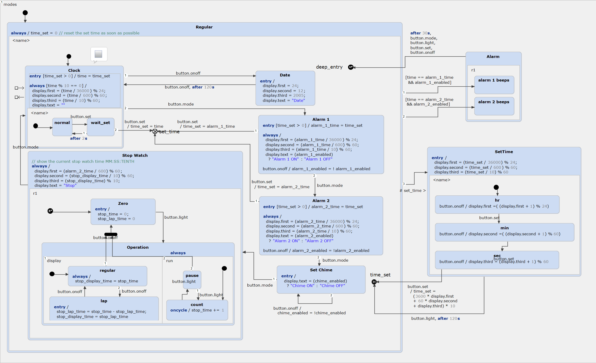

Digital Watch
This digital watch was first designed by Harel, the founder of the Statecharts Theory. He described it in "On Visual Formalisms", published in "Communications of the ACM" in May 1988.
The Digital Watch in all its Details
As you can see in the picture below, the complete statechart is rather complicated and not easy to grasp on first glance:

Gaining a Better Understanding Using Subdiagrams
We can use a YAKINDU SCT feature to extract composite states into subdiagrams. This makes the statechart much easier to comprehend:

Using subdiagrams allows you to abstract the statechart to any level you want, so that you can review the statechart's overall functionality and its inner workings separately – much like a class diagram versus the complete codebase. Copy the example to your workspace and try out the subdiagram editor!
The Interface Definition
For reference, here's the interface declaration of both statecharts: